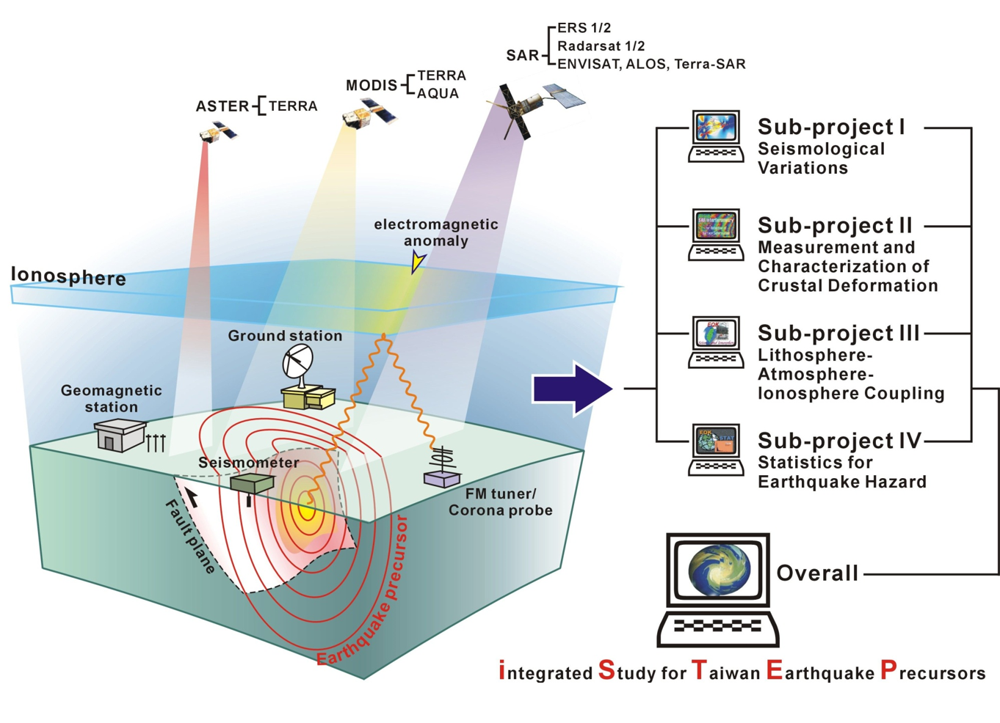

Data
An integrated ground-based seismo-electromagnetic observation system, including eight networks of magnetometers, electrode arrays, corona probes, FM tuners, Doppler sounding Systems, ionosondes, GPS receivers, and all sky cameras, has been constructed and routinely operating to monitor earthquake precursors in the lithosphere, atmosphere, and ionosphere and to find possible lithosphere-atmosphere-ionosphere coupling in the Taiwan area. Several statistical analyses were developed to validate the observed anomalies to be credible precursors. Due to its worldwide availability, the statistical results showed that the ionospheric total electron content (TEC) derived by ground-based GPS receivers were most likely to be a credible precursor.
